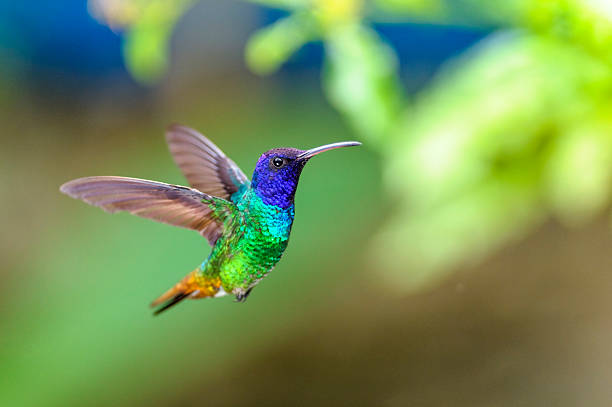

El colibrí es una de las aves más pequeñas del mundo. Es conocido por su capacidad de volar en todas direcciones.
Los colibríes viven en bosques, jardines y selvas de América.
Se alimentan principalmente del néctar de las flores.